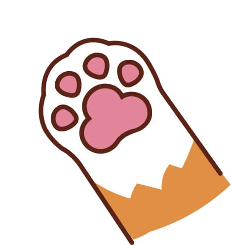
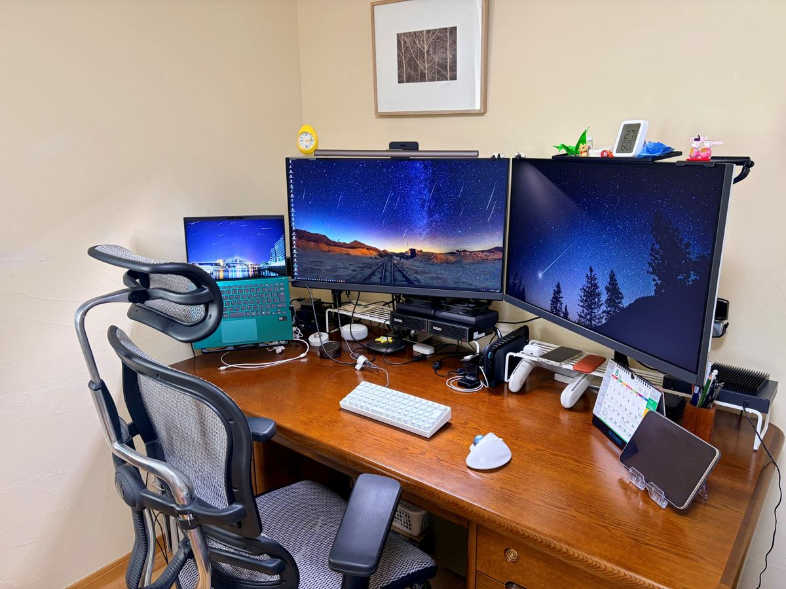
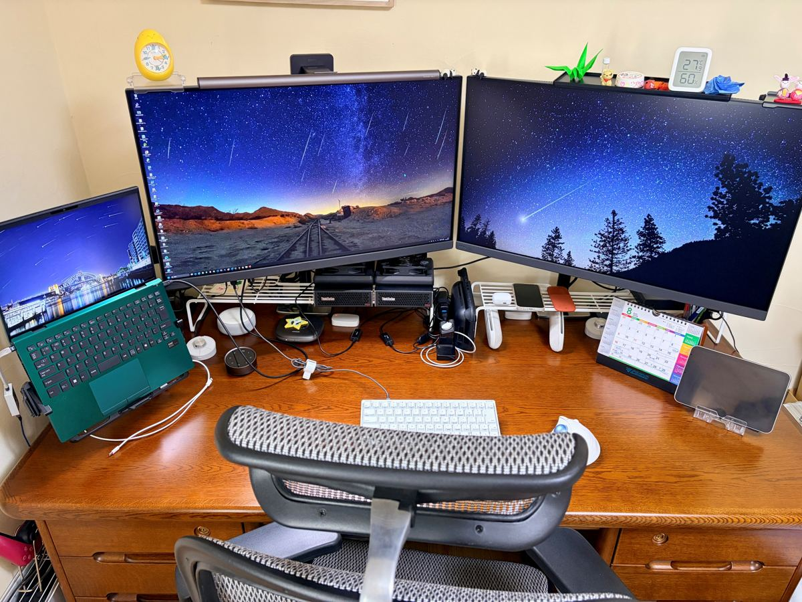

要件定義から保守運用まで、ソフトウェア開発の全工程に対応。車載・POS・決済端末など大規模プロジェクトで培った30年の経験と、ローカルLLMを中心とした生成AIの実務活用で、人手の足りない現場に確かな手を差し出します。
要件定義・設計・実装・評価・保守まで全工程に対応。車載（AUTOSAR Classic Platform / ISO26262 / A-SPICE / MISRA）、POSシステム、決済端末、公共インフラ系まで幅広い分野の開発経験があります。
C / C++ / C# / VB.NET / JavaOllama / vLLM / llama.cpp / Open WebUI によるローカルLLM環境の構築と、Claude Code 等を使った開発・テストの効率化。機密性の高い組み込み開発の現場でも使える「ローカル完結」の生成AI導入を、実務での運用経験にもとづいて支援します。スポットの技術相談（数時間〜数日）から、環境構築・PoCの請負、開発チームへの長期参画まで。
ローカルLLM / 開発効率化Git / GitLab / Jenkins の導入、繰り返し作業のツール化、静的解析（QAC / Polyspace 等）の運用設計、レビュー体制の構築。改善ワーキンググループの立ち上げから現場への浸透まで実行した経験があります。チームマネジメント・客先折衝も対応可能です。
プロセス改善 / マネジメント東京電機大学 理工学部 情報科学科 卒業。協栄産業株式会社に入社。以後20年、公共系（高速道路・警察・鉄道券売機）やカーナビゲーションシステムなどの大規模プロジェクトに従事。
静岡県へ移住。車載メーター制御ソフトウェアの設計開発（AUTOSAR / ISO26262）や業務プロセス改善に約10年従事。
フリーランスエンジニアとして独立。屋号「ねこのてエンジニア」。POSシステム・決済端末の開発に参画。
次期POSシステムの開発現場で、生成AIを活用したテスト自動化・業務効率化に従事中。
猫の手も借りたい——そんな開発現場の「あと一人」になれるエンジニアでありたい、という思いを込めています。
ウォーターフォール開発を主として、いくつもの大規模プロジェクトで多くの人と関わりながら仕事をしてきました。プログラミングだけでなく、上流工程や要件調整などの折衝、チームマネジメントも得意です。
スキルだけでなく、「人」として必要とされる存在であることを大切にしています。
顧客名・成果物・本名はこのサイトには載せていません。NDAを守る仕事だからです。お問い合わせ後の面談で、経歴書とあわせて開示します。
次期POSシステムで使用するモジュールのテスト作業を、生成AIを活用して効率化・自動化するシステムの考案・開発を担当。ローカルLLMの構築・運用を含む、生成AIソリューションの提案も行っています。
非接触ICクレジット機能の移植を担当（設計・製造・テスト）。Unity / CMock によるテスト自動化と、生成AIを活用した作業効率化の提案・実践を並行して実施。
電子マネー決済まわりの設計・製造・テストを担当（全体100名規模）。携帯決済端末（Android/Java）のアプリ開発も担当し、前任者不在の状況から資料を集めて設計書を起こすところから対応。
AUTOSAR Classic Platform 上での制御ソフト開発に約8年従事。チーム20名のマネジメント、客先との仕様折衝、協力会社管理、静的解析結果の判定までを担当。A-SPICE / ISO26262 準拠の開発プロセスを経験。
改善ワーキンググループを立ち上げ、Git / GitLab / Jenkins の導入と定着、繰り返し作業のツール化（PowerShell / Python / Perl）を推進。「提案して終わり」ではなく、開発チームに受け入れられ浸透するまでを実行。
欧州・北米・国内向けの交通情報機能やGUIの設計・製造、開発ベース環境の構築を担当。英語仕様書からの設計書作成、オフショア開発の管理、客先常駐での仕様折衝など、大規模開発（全体100〜200名）の中核を経験。
このほか、鉄道券売機・防災一斉放送・高速道路の監視制御など、公共インフラ系システムの開発実績が多数あります（1994年〜）。
30年分の全業務履歴を見る →| 言語 | C（最長・最得意）/ C++ / C# / VB.NET / Java / PowerShell / Python / Perl / SQL |
|---|---|
| 生成AI | Claude Code / Ollama / vLLM / llama.cpp / Open WebUI（ThinkStation PGX（NVIDIA DGX Spark OEM）×2 を運用中） |
| プラットフォーム | AUTOSAR Classic Platform / VxWorks / 組み込みWindows（CE・Automotive・Windows10）/ 組み込みLinux / Android |
| 規格・プロセス | MISRA C 2004・2012 / CERT-C / Automotive SPICE V3.1 / ISO26262 / ISO9001 |
| ツール | GHS MULTI / Visual Studio / Android Studio / WinAMS・CasePlayer2 / QAC・HelixQAC・Polyspace / Git・GitLab・GitHub / Jenkins / Windchill |
| 対応工程 | 要件定義〜基本設計〜詳細設計〜実装〜評価〜保守運用（全工程）/ チーム・プロジェクトマネジメント / 客先折衝 / 英語仕様書読解 |


32インチ4Kモニタ×2＋モバイルワークステーションの構成。ローカルLLM運用のため ThinkStation PGX（NVIDIA DGX Spark OEM）を2台導入し、生成AIの検証・活用を日常的に行っています。
ロードバイク、ジョギング、ウォーキングで体を動かすのが習慣。座り仕事の体調管理も、長く現場を支えるための大事な仕事のうちだと考えています。
屋号「ねこのて」の由来でもある猫たちと暮らしています。オンラインMTGに乱入してくることがあります。ご容赦ください。
静岡県。リモート中心で全国対応、必要に応じて出社もご相談ください。
業務委託（準委任・請負）。長期参画のほか、スポットの技術相談（数時間〜数日）や生成AI導入のご相談もお受けします。
案件の内容・期間に応じて個別にお見積りします。まずはお気軽にご相談ください。
困っていること・やりたいことを、わかる範囲でお書きください。生成AI導入のご相談だけでも歓迎します。通常2営業日以内にご返信し、オンラインでの面談、本名・経歴書の開示を経て契約に進みます。
※広告掲載・集客支援・SEO・人材紹介などを含む、営業・勧誘目的のご連絡は固くお断りします。これらへの返信は一切いたしません。